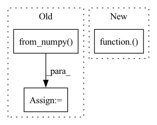

Pattern ID :7709
Before Change
out = out[0]
out.to_host()
res = torch.from_numpy( np.array(out))
res = F.upsample(res, size=gt.shape, mode="bilinear", align_corners=False)
res = res.sigmoid().data.cpu().numpy().squeeze()
res = (res - res.min()) / (res.max() - res.min() + 1e-8)
print("--> save results: {}".format(SAVE_PATH+name))
imageio.imwrite(SAVE_PATH+name, res)After Change
res = mindspore.Tensor(res)
res = mindspore.ops.Sigmoid()(res)
res = mindspore.nn.ResizeBilinear()( res, (h, w))
res = (res - res.min()) / (res.max() - res.min() + 1e-8)
res = res.asnumpy().squeeze()
imageio.imwrite(save_path+img_name.replace(".jpg", ".png"), res)
In pattern: SUPERPATTERN
Frequency: 3
Non-data size: 3
Instances Fragment ID: 25604293
Project Name: gewelsji/dgnet
Commit Name: f82c53433a67c0ed8d98385254a023d800a1335c
Time: 2022-11-18
Author: gepengai.ji@gmail.com
File Name: lib_ascend/inference_om.py
M Class Name: AnonimousClass
N Class Name: AnonimousClass
M Method Name: infer(4)
N Method Name: infer(3)
M Parent Class:
N Parent Class:
M File Name: lib_ascend/inference_om.py
N File Name: lib_ascend/inference_om.py
M Start Line: 41
M End Line: 63
N Start Line: 45
N End Line: 86
Before Change
ir_file = os.path.join(self.ir_files_dir, ir_file)
if ir_file.endswith(".mat"):
data= io.loadmat(ir_file)
IR = torch.from_numpy( data[self.mat_dict_key]) .view(-1).float()
else:
IR, _ = torchaudio.load(ir_file)
IR = IR.view(-1)After Change
IR = IR[0]
if rate != self.ir_rate:
transformed = torchaudio.transforms.Resample(rate, self.ir_rate)( IR.view(1,-1))
IR = IR.view(-1)
IR = IR[:self.max_reverb_len]
Fragment ID: 25604283
Project Name: shangeth/wavencoder
Commit Name: ef13a183eda6e006e80057c8bc49676a771a098e
Time: 2021-02-25
Author: shangethrajaa@gmail.com
File Name: wavencoder/transforms/reverberation.py
M Class Name: Reverberation
N Class Name: Reverberation
M Method Name: load_IR(1)
N Method Name: load_IR(1)
M Parent Class:
N Parent Class:
M File Name: wavencoder/transforms/reverberation.py
N File Name: wavencoder/transforms/reverberation.py
M Start Line: 18
M End Line: 25
N Start Line: 19
N End Line: 27
Before Change
scale = min(scale1, scale2)
out_h, out_w = in_h * scale, in_w * scale
img = sktsf.resize(img, (in_c, out_h, out_w), mode="reflect", anti_aliasing=False) // np.float64
img = self.normalize(torch.from_numpy( img) ).numpy()
// img = F.interpolate(img.unsqueeze(0), size=(round(in_h * scale), round(in_w * scale)), mode="nearest").squeeze(0)
// img = tvtsf.Normalize(mean=[0.485, 0.456, 0.406], std=[0.229, 0.224, 0.225])(img)
return img_path, img, img.shape[1:]After Change
scale2 = 1000 / max(in_h, in_w)
scale = min(scale1, scale2)
img = F.interpolate(img.unsqueeze(0), size=(round(in_h * scale), round(in_w * scale)), mode="nearest").squeeze(0)
img = tvtsf.Normalize(mean=[0.485, 0.456, 0.406], std=[0.229, 0.224, 0.225])( img)
return img_path, img, img.shape[1:]
def __len__(self):
return len(self.files) Fragment ID: 25604281
Project Name: pangkun248/faster-rcnn-pytorch
Commit Name: 9f846e1554bc021a8736389744969d0dd7f97321
Time: 2021-08-30
Author: 39581901+pangkun248@users.noreply.github.com
File Name: dataset.py
M Class Name: ImageFolder
N Class Name: ImageFolder
M Method Name: __getitem__(2)
N Method Name: __getitem__(2)
M Parent Class: Dataset
N Parent Class: Dataset
M File Name: dataset.py
N File Name: dataset.py
M Start Line: 110
M End Line: 119
N Start Line: 91
N End Line: 99